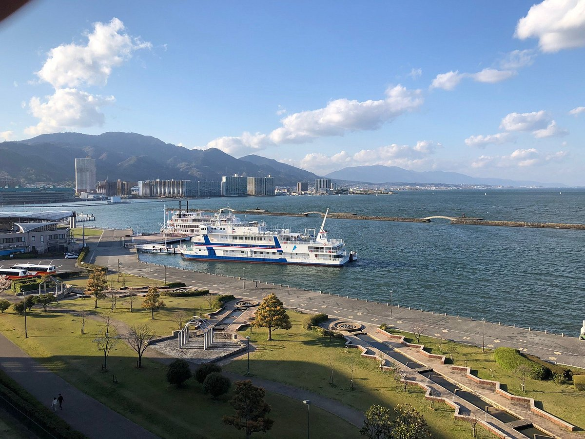

March 2019
Spring was quietly arriving in Japan. The cold winter days were slowly disappearing, and everyone could feel that a new season was about to begin. For us, however, spring carried another meaning. Graduation was only a few weeks away. Our Japanese language school had organized one final excursion before we completed our studies—a two-day journey through Hikone, Lake Biwa, and Kyoto. At the time, none of us thought of it as a farewell trip. We were simply excited to travel together one last time. Our cameras were fully charged, backpacks were packed, and the excitement of leaving the classroom for a couple of days filled the entire school. Looking back now, I realise this wasn't just another school excursion. It quietly became the final chapter of one of the happiest periods of my life in Japan.
Whenever I open the photographs from those two unforgettable days, I don't just see castles, temples, hotels, or beautiful landscapes. I see the smiles of classmates from different countries. I hear the laughter inside the bus. I remember late-night conversations, shared meals, and countless moments that seemed ordinary then but have become priceless memories today. This wasn't simply a trip through Kyoto. It was our last journey together before graduation.
Journey Overview
-
📅 Date
March 2019 -
🚌 Duration
2 Days -
🎓 Occasion
Graduation Farewell Trip -
📍 Route
Nagoya → Hikone Castle → Omihachiman → Lake Biwa → Kyoto → Nagoya
"The best journeys are often the ones we don't realise are our last until they become memories."
Day One Leaving Nagoya
The morning began long before sunrise. Although everyone looked sleepy, there was an unmistakable excitement in the air. Students gathered outside the school carrying backpacks, cameras, and snacks while teachers checked attendance and organized the groups. Friends greeted one another with cheerful smiles, joking about who would sleep the entire bus ride and who would take the most photographs. The atmosphere felt completely different from an ordinary school day. There were no classrooms waiting for us. No homework. No exams. Only an adventure.
As the bus slowly pulled away from Nagoya, conversations quickly filled every seat. Some people listened to music through their headphones while others chatted excitedly about the places we were about to visit. Outside the window, the familiar streets of Nagoya gradually disappeared, replaced by quiet countryside, rivers, distant mountains, and small Japanese towns. I spent most of the journey looking outside, appreciating how peaceful everything looked. Japan always had a unique way of making even ordinary landscapes feel beautiful. At that moment, none of us imagined how much we would cherish this simple bus ride years later.

Hikone Castle
After several hours of travelling, our first destination finally appeared in the distance. Standing proudly above the city, Hikone Castle immediately captured everyone's attention. Built more than four hundred years ago, it is one of Japan's few original castles that has survived centuries of history. Walking through its ancient stone gates felt like stepping back into the Edo period. Every wooden staircase, every white wall, and every carefully preserved structure reflected Japan's deep respect for its history.

Walking around the castle grounds, I admired the impressive architecture and imagined how this fortress had stood through centuries of Japanese history. It was fascinating to think that generations of samurai, rulers, and ordinary people had once walked the same paths that we were exploring that day.

As we climbed higher, an entirely different view unfolded before us. From the castle grounds, we could see the peaceful city below and the vast blue waters of Lake Biwa, Japan's largest freshwater lake. Standing there with my classmates, enjoying the cool breeze and the beautiful scenery, I realised why Hikone Castle is considered one of the country's greatest historical treasures. It was a perfect blend of history, nature, and unforgettable memories.
Omihachiman
Leaving Hikone Castle behind, our journey continued through the peaceful countryside of Shiga Prefecture until we arrived in Omihachiman. Compared to the grandeur of the castle, this town felt calm, welcoming, and full of natural beauty. Traditional Japanese houses lined the quiet streets, while carefully maintained gardens and fresh spring greenery surrounded us. It was the kind of place where time seemed to move more slowly.
Walking through the gardens with my classmates, I found myself appreciating the little details—the sound of birds singing, the gentle breeze through the trees, and the peaceful atmosphere that surrounded us. We wandered along the pathways, taking photographs together and simply enjoying the moment. Looking back now, those conversations and shared laughter are just as memorable as the scenery itself.
A Traditional Japanese Lunch
By midday, we arrived in Yasu, where a traditional Japanese lunch had been arranged for our group. Like many meals in Japan, it was beautifully presented, with each dish carefully placed in its own small bowl. The table was filled with rice, grilled fish, boiled vegetables, miso soup, pickles, and a variety of seasonal side dishes.
For many of us, meals like this had become part of daily life in Japan, yet sharing one together during our farewell trip made it feel special. We laughed as everyone compared dishes, exchanged opinions about their favourites, and tried foods that some of us had never tasted before. The meal wasn't just delicious—it became another moment that brought us closer together.

Lake Biwa
After lunch, we continued towards one of Japan's greatest natural treasures—Lake Biwa. As our bus approached the shoreline, an endless expanse of shimmering blue water stretched across the horizon. It was difficult to believe we were looking at a lake rather than the sea.
We stopped near the lakeside, where everyone eagerly stepped outside with cameras in hand. The fresh breeze carried across the water as we walked together, taking photographs, laughing, and enjoying the spectacular view. Every direction seemed picture-perfect. The peaceful atmosphere, the gentle waves, and the wide open sky created one of the most unforgettable scenes of the entire trip.
At the time, these photographs were simply souvenirs from another school excursion. Years later, I realise they captured something much more valuable—the final carefree days I spent with friends before our paths began to separate.
"Sometimes we don't realise we're living the memories we'll cherish most until years later."

An Evening at Biwako Hotel
As the afternoon slowly gave way to evening, we finally arrived at Biwako Hotel in Otsu. Our rooms had been arranged by the school, making the experience feel even more special. Walking through the elegant lobby, it was clear that this would be the most luxurious place we would stay during our school years.
When I entered my room and looked out of the window, I was greeted by a breathtaking view of Lake Biwa. The calm water reflected the colours of the evening sky, while boats rested quietly near the harbour below. Watching the sunset over Japan's largest lake remains one of the most peaceful moments I experienced during my time in Japan.

A Traditional Evening Meal
That evening, the hotel served a traditional Japanese dinner for all of us. The meal included grilled fish, simmered vegetables, rice, soup, fresh seasonal ingredients, and several beautifully arranged side dishes. Everything was prepared with the attention to detail that Japanese cuisine is known for.
We spent the evening talking, laughing, and enjoying the meal together. Looking around the dining room, I realised how international our class had become. Students from different countries, speaking different languages, had all found a second home together in Japan.

A Night to Remember
After dinner, none of us wanted to spend the rest of the evening inside our rooms. We changed into more comfortable clothes and gathered in the hotel lobby before heading out together. The air was cool and refreshing, and the streets around Lake Biwa were peaceful. Without teachers guiding our schedule, it felt as though we had a little freedom to simply enjoy each other's company.
We stopped by a nearby convenience store to buy snacks and drinks. Some of us picked up soft drinks, while others bought Japanese beer. Sitting together beside the lakeside, we talked about school, our plans after graduation, and the memories we had made over the past two years. We laughed about classroom moments, shared stories, and took more photographs without thinking how meaningful they would become in the future.
Bowling with Friends
Later that evening, we found a bowling alley and decided to play a few games together. The competition quickly became more about laughter than winning. Every strike was celebrated, every gutter ball became a joke, and the sound of cheering echoed throughout the bowling centre.
Looking back, I can barely remember who won. What I remember most is how happy everyone looked. For a few hours, there were no thoughts about assignments, graduation, or saying goodbye. We were simply friends enjoying one more unforgettable night together.

"We thought we were making plans for the future. We were actually making memories that would last a lifetime."
The Morning Over Lake Biwa
The next morning, I woke early and looked out through the hotel window. The lake was calm, reflecting the soft colours of the morning sky. Boats rested quietly near the shore while the city slowly came to life. It was peaceful in a way that photographs can never fully capture.
After enjoying breakfast together at the hotel, we checked out, gathered in the lobby, and boarded the bus once again. Day one had already given us unforgettable memories, but another exciting destination still awaited us. Our next stop was Kyoto.

Kyoto – The Cultural Heart of Japan
Leaving Otsu behind, we travelled towards Kyoto, a city that had fascinated me long before I first came to Japan. Unlike the modern skylines of many Japanese cities, Kyoto preserves centuries of history through its temples, shrines, wooden streets, and traditional architecture. As we entered the city, I immediately noticed the different atmosphere. Every street seemed to carry stories from another era.
Walking through Kyoto felt like stepping into a living museum. Historic buildings stood beside quiet gardens, traditional shops welcomed visitors, and every corner reflected the elegance that has made Kyoto one of Japan's most treasured destinations.

Kinkaku-ji – The Golden Pavilion
One of the highlights of the entire trip was visiting Kinkaku-ji, the famous Golden Pavilion. Seeing the temple in person was unforgettable. Covered in brilliant gold leaf and perfectly reflected in the surrounding pond, it looked even more beautiful than the photographs I had seen before.
We slowly walked around the gardens, taking in every view while our teachers explained the history of the temple. Surrounded by carefully maintained trees, peaceful water, and traditional architecture, it was easy to understand why Kinkaku-ji is considered one of Japan's greatest cultural treasures.

Toei Kyoto Studio Park
Our final destination before returning to Nagoya was Toei Kyoto Studio Park, a place where Japan's history comes to life. Unlike a traditional museum, the park allowed visitors to experience the atmosphere of old Japan by walking through streets designed to resemble the Edo period. Wooden buildings, narrow alleyways, traditional shops, and historical sets made it feel as though we had travelled back in time.
As we explored the park, we watched live performances featuring samurai warriors and ninja characters. Actors dressed in beautiful kimonos walked through the streets while exciting sword demonstrations attracted crowds of visitors. The entire park celebrated Japanese culture, history, and cinema, creating an unforgettable experience for everyone.


Meeting a Samurai
One of my favourite memories from the entire trip happened at the studio park. I met a performer dressed as a samurai, complete with traditional clothing, a unique hairstyle, and a katana at his side. He kindly showed me how a Japanese sword should be held and explained a few basic movements.
Although it lasted only a few minutes, it was a fascinating experience. Holding a katana while standing beside someone who looked as though he had stepped out of Japan's history made the moment feel incredibly authentic. Of course, we couldn't leave without taking photographs together.

"Travel allows us to visit beautiful places, but the people we meet along the way give those places meaning."
The Journey Home
As the afternoon came to an end, it was finally time to board the bus once again and return to Nagoya. The excitement that had filled the journey two days earlier had become quieter. Many of us looked through the windows in silence while others rested after an unforgettable trip.
Watching the scenery pass by, I realised our school life was also approaching its final destination. In only a few days, we would graduate, say goodbye to our teachers, and begin new chapters in different parts of the world. None of us knew exactly what the future would bring, but we all understood that moments like these would never happen again.
Graduation Day
About a week after returning from Kyoto, we gathered once again at our Japanese language school—this time for our graduation ceremony. Everyone arrived dressed smartly, excited to celebrate what we had achieved together, yet quietly aware that this would be our final day as classmates.
Inside the ceremony hall, teachers gave speeches reflecting on our journey, encouraging us as we prepared for the next stage of our lives. One by one, our names were called. We walked onto the stage, received our graduation certificates, bowed respectfully, and posed for photographs that would preserve the occasion forever.
After the ceremony ended, nobody seemed eager to leave. We spent hours taking photographs with our teachers and friends, laughing together while trying to hide the sadness of saying goodbye. Promises were made to stay in touch, although we all knew that life would soon take each of us in different directions.

Looking Back
When I first travelled to Japan, I believed the country itself would become my greatest memory. Years later, I realised that while Japan gave me breathtaking landscapes, historic temples, and unforgettable experiences, it was the people who truly made those moments meaningful.
This farewell journey through Hikone, Lake Biwa, and Kyoto wasn't simply another school excursion. It became the final adventure of one of the happiest chapters of my life. Every photograph reminds me not only of the places I visited but also of the friendships we built, the laughter we shared, and the unforgettable experiences that shaped who I became.
Although our paths eventually separated after graduation, those memories have remained with me ever since. Whenever I look back at these photographs, I don't simply remember a school trip. I remember a time when life felt wonderfully simple. I remember friendship. I remember growth. And I remember that every ending quietly becomes the beginning of another journey.
Although years have passed since that spring in Japan, every photograph from this journey still brings me back to those moments. Some places fade from memory, but the people we shared them with never truly do.
"Every journey eventually reaches its destination, but the memories continue travelling with us forever."
旅立ち (Tabidachi)
In Japanese, Tabidachi means "departure" or "setting out on a new journey." Looking back, our farewell trip was more than a visit to Kyoto. It marked our own Tabidachi. We left behind classrooms, routines, and familiar faces, each of us beginning a different path while carrying the memories we had created together.